Г.Д. Журавлев в центре с учителями, начальная школа № 83, Таштагол
- 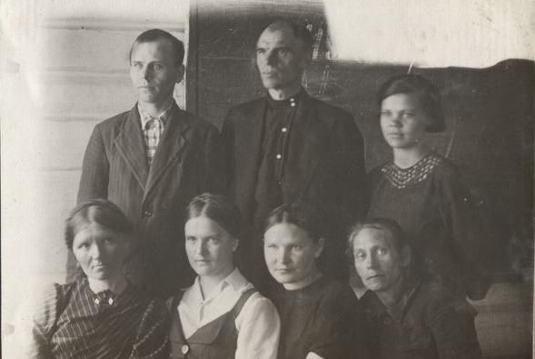
- 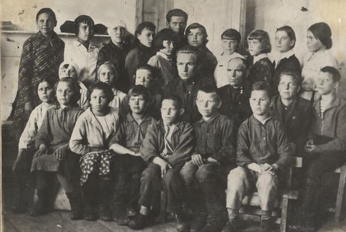
Г.Д. Журавлев во втором ряду третий справа с учителями и учениками, начальная школа № 83,Таштагол
- 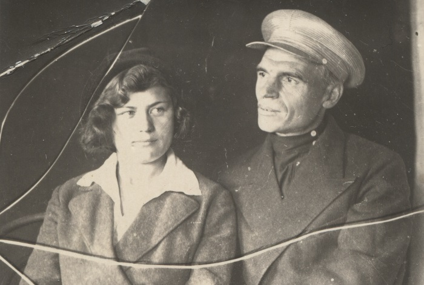
Григорий Дмитриевич Журавлев дочь Елена Александровна Шевченко, Таштагол
Начальная школа №83 основана в 1932 году. Она находилась в центре перевалочной базы геологоразведочной партим. В школе было две комнаты: в одной проводились уроки, в другой жили учителя. Занятия проводились в две смены. Обучались в школе ученики 1-4 классов. Это быда первая школа в нашей местности. В неё ходили дети с Каменушки, Бахаревки, Алчка, Кочуры, из Чутунаша.Потом школа переехала в мовое здание двухэтажной конторы геологоразведочной партии.Директором школы назначили Григория Дмятриевича Жураплева. Учителями работали дочь Журавлева Е. А.Журавлев И. Д. Математику преподавал И.В. Голубев, немецкий язык - А.А. Машинская, биологию - И.Д. Журавлс.Младшие классы учили Е.Ф. Таприлова, К.О. Никитенко. В школе было от 5 до 7 классов. Условия трудные: не кватало учебников, не была иренодавателей, нередко не хватало дров
- 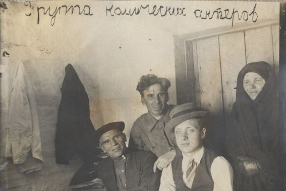
Школьный театр. Слева сидит Г.Д. Журавлев, Таштагол
- 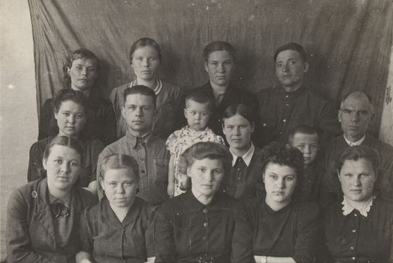
Журавлев Г. Д. первый справа во втором ряду с учителями, рядом внучка Шевченко Людмила Владимировна.Таштагол 15.03.1946 г.
- 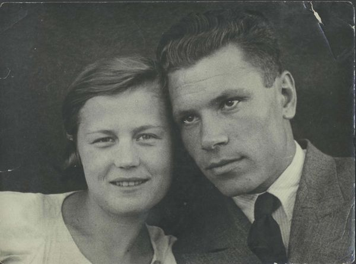
Шевченко (Журавлева) Елена Александронна с мужем Владимиром Андрееничем
- 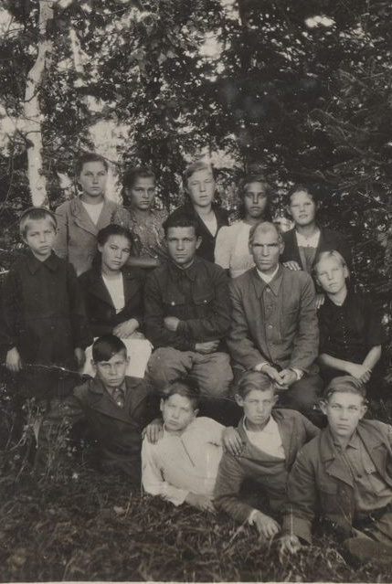
Г. Д. Журавлев во втором ряду второй справа,Шеченко Людмила Владимировна слева во втором ряду первая, весна - лето 1946 г.
- 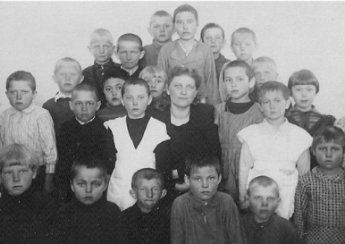
2 класс Шалымской семилетней школы No 83.Каныштарова Валентина в третьем ряду нторая слева.Учитель Валентина Александровна, 1952 г.
- 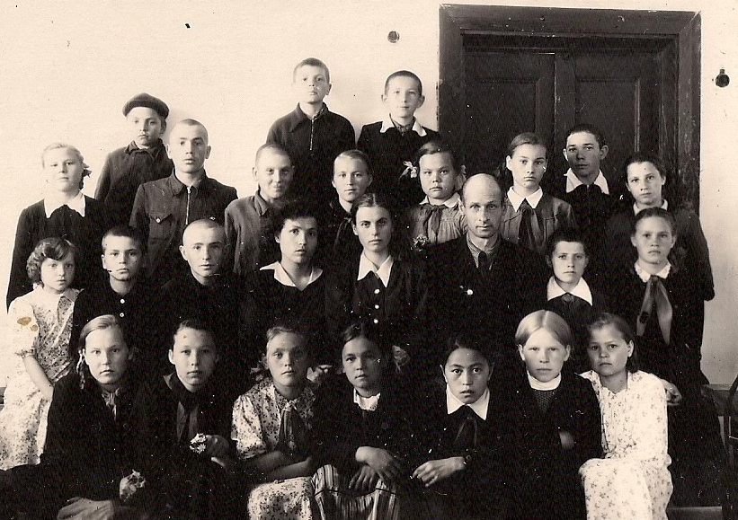
5 6 класс семилетней школы No 83.Каныштарова Валентина в первом ряду третья справа, 1955 г.
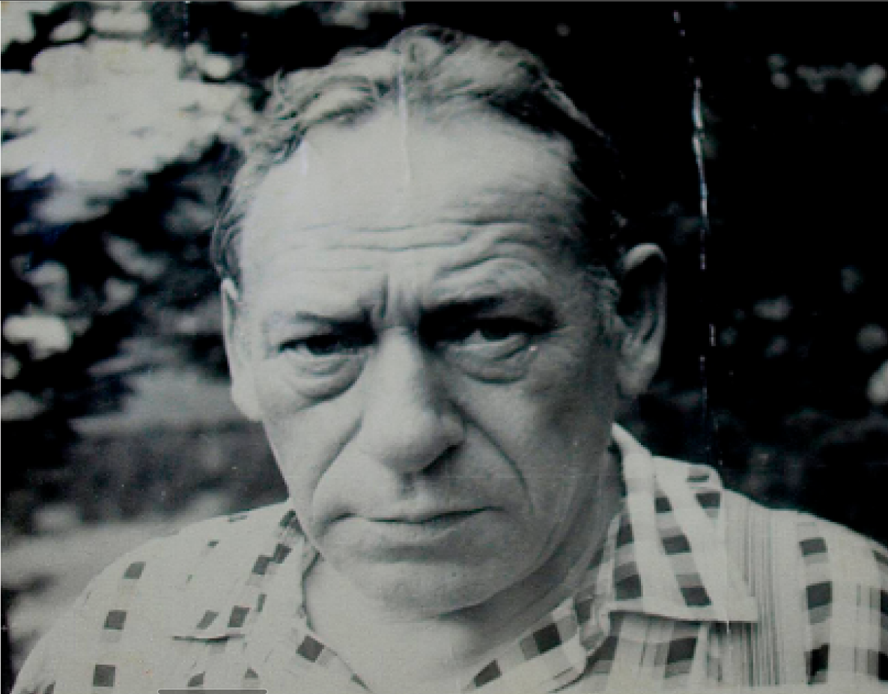
Карп Онуфриенич Никитенков
В 1939 году директором школы был назначен К.О. Никитенко.
В 1940 году его взяли в армию, затем он был отправлен на Карельский фронт.
В 1942 году школу перевели в здание инструментального цеха, потому что двухэтажное здание пришло в негодность. Директором опять стал Журавлев Г.Д.
В 1947 году он умер и на его место был назначен Карп Онуфриевич Никитенко, вернувшийся с фронта.
В 1948г. был произведен капитальный ремонт. Условия были очень трудные: не хватало денег, лошадей, не было прораба. Зимой ученики сами возили дрова. Иногда в школе было так холодно, что чернила застывали в чернильницах, а после мытья полов можно было кататься, как на катке.
В 1940 году его взяли в армию, затем он был отправлен на Карельский фронт.
В 1942 году школу перевели в здание инструментального цеха, потому что двухэтажное здание пришло в негодность. Директором опять стал Журавлев Г.Д.
В 1947 году он умер и на его место был назначен Карп Онуфриевич Никитенко, вернувшийся с фронта.
В 1948г. был произведен капитальный ремонт. Условия были очень трудные: не хватало денег, лошадей, не было прораба. Зимой ученики сами возили дрова. Иногда в школе было так холодно, что чернила застывали в чернильницах, а после мытья полов можно было кататься, как на катке.
- В 1951г. учащиеся школы заложили сад.
В 1958 году Карп Онуфриевич Никитенко закладывает школу на новом месте недалеко от впадения реки Шалым в Кондому, в этом же году вступает в строй одно крыло школы, где и проводились занятия. В 1959 году строительство школы было закончено полностью.
В 1961 г. школа стала восьмилетней, сад с территории старой школы был перенесен на новое место. Она стала называться восьмилетней школой № 9.
В1962 году. Никитенко К.О. ушел с должности директора по состоянию здоровья. А в 1969 году он умер.
В 1965 году к основному зданию был пристроен спортивный зал, затем новое здание котельной
и мастерские:в одном крыле проводились уроки домоводства, а в другом
находились столярная и слесарная мастерские.
В период с 1962 года по 1970 директорами школы были Цыплаков И.А. и Фадеев.
Летом 1970 года в Горную Шорию приехал Толкунов Александр Харитонович,
и он был назначен директором Усть-Шалымской восьмилетней школы.
В этой должности он оставался до августа 1974 года, затем работал учителем.
Александр Харитонович был очень эрудированным, разносторонним, творческим человеком.
За свою долгую педагогическую жизнь вел многие предметы: биологию и географию,
химию и физику, историю и русский язык. - 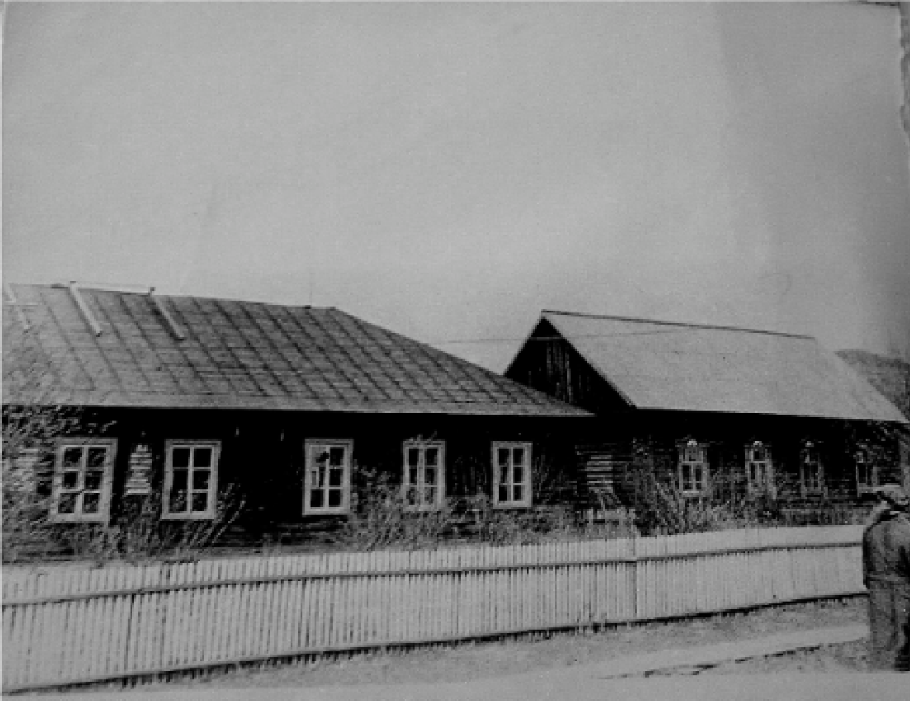
Здание Усть-Шалымской восьмилетей школы №9
В сентябре 1979 года школа получила новое трёхэтажное здание и стала средней.
Директором был назначен Глебов Геннадий Васильевич, работавший до этого учителем черчения и труда в Темир-Таусской средней школе №20.
Завучами стали Бородина Валентина Петровна и Каныштарова Валентина Павловна.